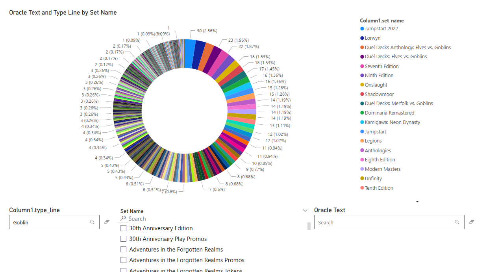
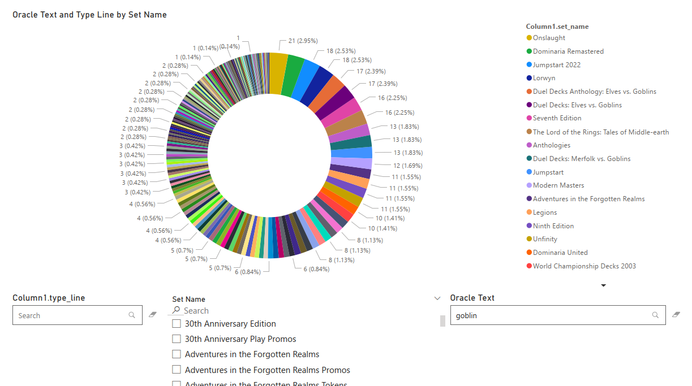
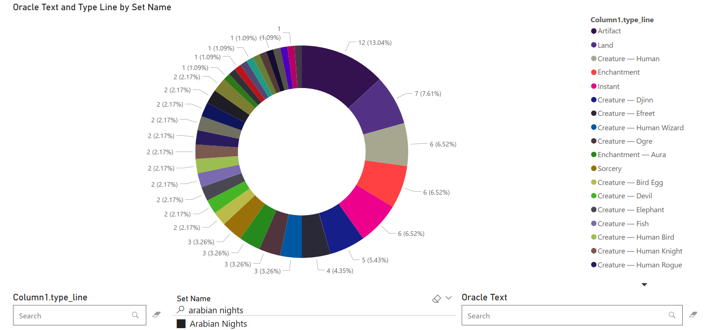

Magic: The Gathering (MTG) is the world's most popular trading card game. With tens of thousands of cards, finding answers can be tricky. With data analysis, we can answer questions like "Which set has the most goblin cards?" and "Which cards are worth printing out at home?"
Data Pipeline
Scryfall is a popular website for researching cards in MTG. It provides daily exports of their card data in bulk files. The file is downloaded from the internet and parsed with Excel's power query. This allows us to keep only the columns that are relevant to the analysis, which saves on file size.
New cards are added to the game every few months. Unless the analysis concerns card price, the data only needs to be updated every now and then.
Which Set Has the Most Goblin Cards?
Goblins are a popular card type in the game. But, without prior knowledge, it can be hard to know which products contain goblins.
Using Power BI, we can view the amount of card types in each set by using a donut chart. Then, we can use a text filter to find each card whose type mentions the word "goblin". We can see that the set with the most goblin type cards is Jumpstart 2022!

We can also filter with the card's Oracle Text, which is the text that describes what the card actually does in the game. This way, we can find any card that mentions the word "goblin" to find cards that synergize well with our other goblins from Jumpstart 2022.

Our final filter is Set Name. Previously, we've been using card type to find set names, but we can also use set names to find the different card types. Viewing this requires us to drill down into the report. Instead of displaying set names, we are now looking at card types. We can see that the set "Arabian Nights" has 12 artifact cards.

This type of analysis helps us look at a large set of data at a high level. When I got back into magic, I looked at each card in each set one by one to learn about the game. But now, we've taken a huge dataset and distilled it into clean and actionable information.